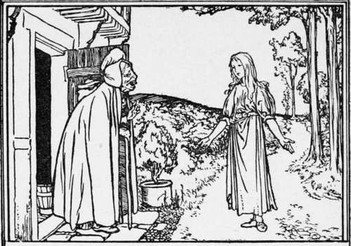
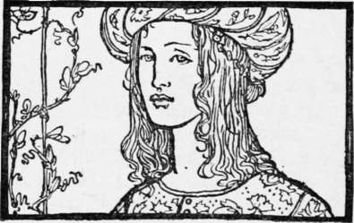

Mother Holle
Description
This section is from the book "Household Tales by Brothers Grimm", by Brothers Grimm. Also available from Amazon: Household Tales by Brothers Grimm.
Mother Holle
Once upon a time there was a widow who had two daughters; one of them was beautiful and industrious, the other ugly and lazy. The mother, however, loved the ugly and lazy one best, because she was her own daughter, and so the other, who was only her stepdaughter, was made to do all the work of the house, and was quite the Cinderella of the family. Her stepmother sent her out every day to sit by the well in the high-road, there to spin until she made her fingers bleed. Now it chanced one day that some blood fell on to the spindle, and as the girl stooped over the well to wash it off, the spindle suddenly sprang out of her hand and fell into the water. She ran home crying to tell of her misfortune, but her stepmother spoke harshly to her, and after giving her a violent scolding, said unkindly, "As you have let the spindle fall into the well you may go yourself and fetch it out."
The girl went back to the well not knowing what to do, and at last in her distress she jumped into the water after the spindle.
She remembered nothing more until she awoke and found herself in a beautiful meadow, full of sunshine, and with countless flowers blooming in every direction.
She walked over the meadow, and presently she came upon a baker's oven full of bread, and the loaves cried out to her, "Take us out, take us out, or alas! we shall be burnt to ? cinder; we were baked through long ago." So she took the bread-shovel and drew them all out.
She went on a little farther, till she came to a tree full of apples. "Shake me, shake me, I pray," cried the tree; "my apples, one and all, are ripe." So she shook the tree, and the apples came falling down upon her like rain ; but she continued shaking until there was not a single apple left upon it. Then she carefully gathered the apples together in a heap and walked on again.
The next thing she came to was a little house, and there she saw an old woman looking out, with such large teeth, that she was terrified, and turned to run away. But the old woman called after her, " What are you afraid of, dear child? Stay with me; if you will do the work of my house properly for me, I will make you very happy. You must be very careful, however, to make my bed in the right way, for I wish you always to shake it thoroughly, so that the feathers fly about; then they say, down there in the world, that it is snowing; for I am Mother Holle."
The old woman spoke so kindly, that the girl summoned up courage and agreed to enter into her service.
She took care to do everything according to the old woman's bidding, and every time she made the bed she shook it with all her right, so that the feathers flew about like so many snowflakes. The old woman was as good as her word; she never spoke angrily to her, and gave her roast and boiled meats every day.
So she stayed on with Mother Holle for some time, and then she began to grow unhappy. She could not at firsr tell why she felt sad, but she became conscious at last of great longing to go home; then she knew she was homesick, although she was a thousand times better off with Mother Holle than with her mother and sister. After waiting awhile, she went to Mother Holle and said, "I am so homesick, that I cannot stay with you any longer, for although I am so happy here, I must return to my own people."
Then Mother Holle said, " I am pleased that you should want to go back to your own people, and as you have served me so well and faithfully, I will take you home myself."
Thereupon she led the girl by the hand up to a broad gateway. The gate was opened, and as the girl passed through, a shower of gold fell upon her, and the gold clung all her, so that she was covered with it from head to foot.
"That is a reward for your industry," said Mother Holle, and as she spoke she handed her the spindle which she had dropped into the well.
The gate was then closed, and the girl found herself back in the old world close to her mother's house. As she entered the courtyard, the cock, who was perched on the well, called out—
"Cock-a-doodle-doo!
Your golden daughter's come back to you."
Then she went in to her mother and sister, and as she was so richly covered with gold, they gave her a warm welcome. She related to them all that had happened, and when the mother heard how she had come by her great riches, she thought she should like her ugly, lazy daughter to go and try her fortune. So she made the sister go and sit by the well and spin, and the girl pricked her finger and thrust her hand into a thorn-bush, so that she might drop some blood on to the spindle ; then she threw it into the well, and jumped in herself.
Like her sister, she awoke in the beautiful meadow, and walked o\er it till she came to the oven. "Take us out, take us out, or alas! we shall be burnt to a cinder; we were baked through long ago," cried the loaves as before. But the lazy girl answered, " Do you think I am going to dirty my hands for you ?" and walked on.
Presently she came to the apple tree. "Shake me, shake me, I pray; my apples, one and all, are ripe," it cried. But she only answered, " A nice thing to ask me to do, one of the apples might fall on my head," and passed on.
At last she came to Mother Holle's house, and as she had heard all about the large teeth from her sister, she was not afraid of them, and engaged herself without delay to the old woman.
The first day she was very obedient and industrious, and exerted herself to please Mother Holle, for she thought of the gold she should get in return. The next day, however, she began to dawdle over her work, and the third day she was more idle still; then she began to lie in bed in the mornings and refused to get up.
Worse still, she neglected to make the old woman's bed properly, and forgot to shake it so that the feathers might fly about. So Mother Holle very soon got tired of her, and told her she might go. The lazy girl was delighted at this, and thought to herself, " the gold will soon be mine." Mother Holle led her, as she had her sister, to the broad gateway; but as she was passing through, instead of the shower of gold, a great bucketful of pitch came, pouring over her.
"That is in return for your services," said the old woman, and she shut the gate.
So the lazy girl had to go home covered with pitch, and the cock on the well called out as he saw her—
"Cock-a-doodle-doo!
Your golden daughter's come back to you."
But, try what she would, she could not get the pitch off, and it stuck to her as long as she lived.

Continue to:
- prev: Rumpel Stilts-Ken
- Table of Contents
- next: The Nose-Tree
Tags
fairy tales, children's stories, brothers grimm, household tales